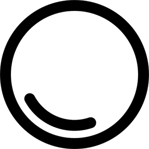
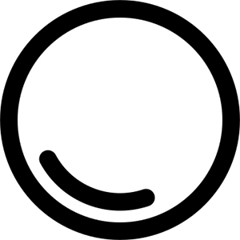
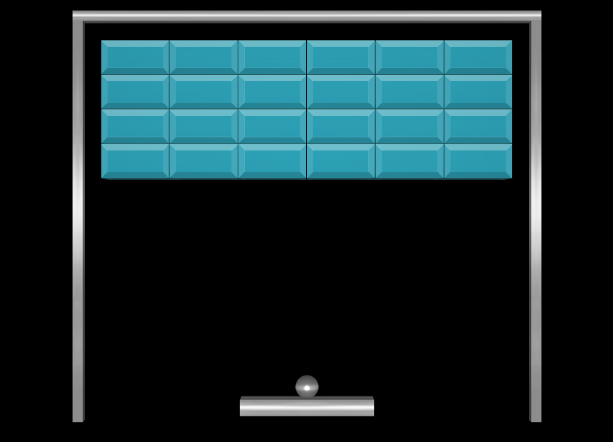
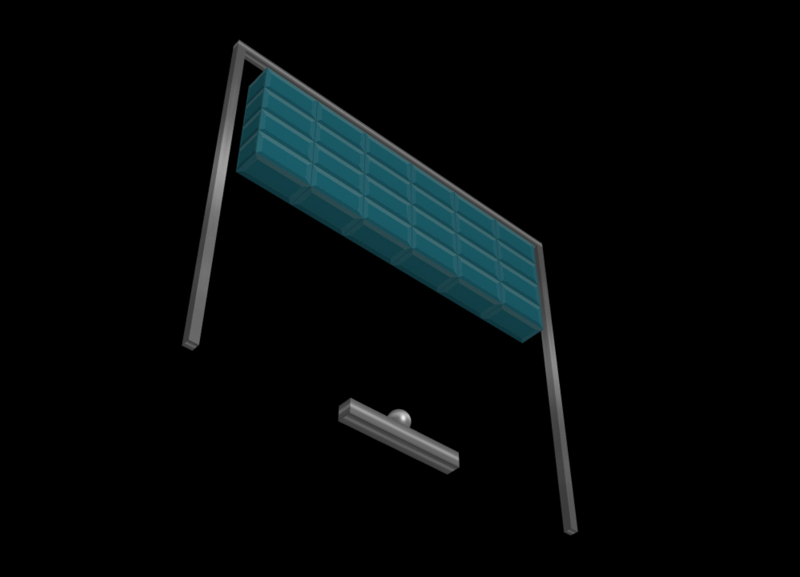

University projects
Arkanoid 3D web game (November 2019 - January 2020)
Goal: Implementing a 3D web game inspired by block breaker video game Arkanoid (1986) by Taito, in which the player has to break all the bricks by making a ball bounce with a horizontal bar. In this project, the goal is to generate all the visuals, implement a camera system and develop the game mechanics, using a physics engine.
Context: Master's degree in Artificial Intelligence, in Erasmus at University of Malta.
Tools:

 



 Français
Français
Made with by Benoît Pannetier © 2022
Finding Space by Takahiro Sakamoto